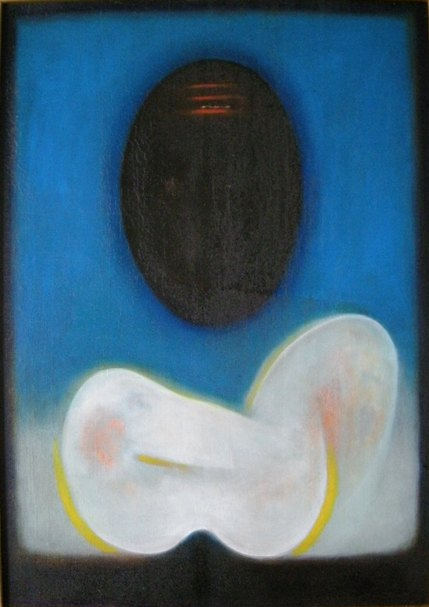

Ghulam Rasool Santosh
1929–1997
Artist Biography
Ghulam Rasool Santosh, poet and painter, was born and raised in Kashmir. Essentially self-taught as an artist, Santosh in 1950 joined the Progressive Arts Association in Kashmir. His work gained recognition and in 1954 he won a scholarship to study under N.S. Bendre at the MS University, Baroda. Santosh initially painted landscapes but these became more abstracted over time. In the 1960s he began to study Tantric mysticism, which came to have a major influence on his increasingly pure artistic vision. Santosh held over thirty solo shows, starting in 1953, and received a number of important awards over his lifetime. Delhi Art Gallery held a major retrospective, ‘Awakening’, in 2011/12.

Untitled, 1969